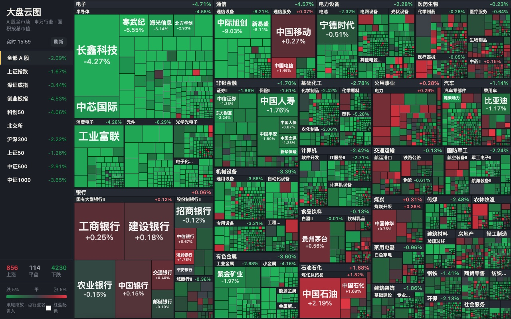
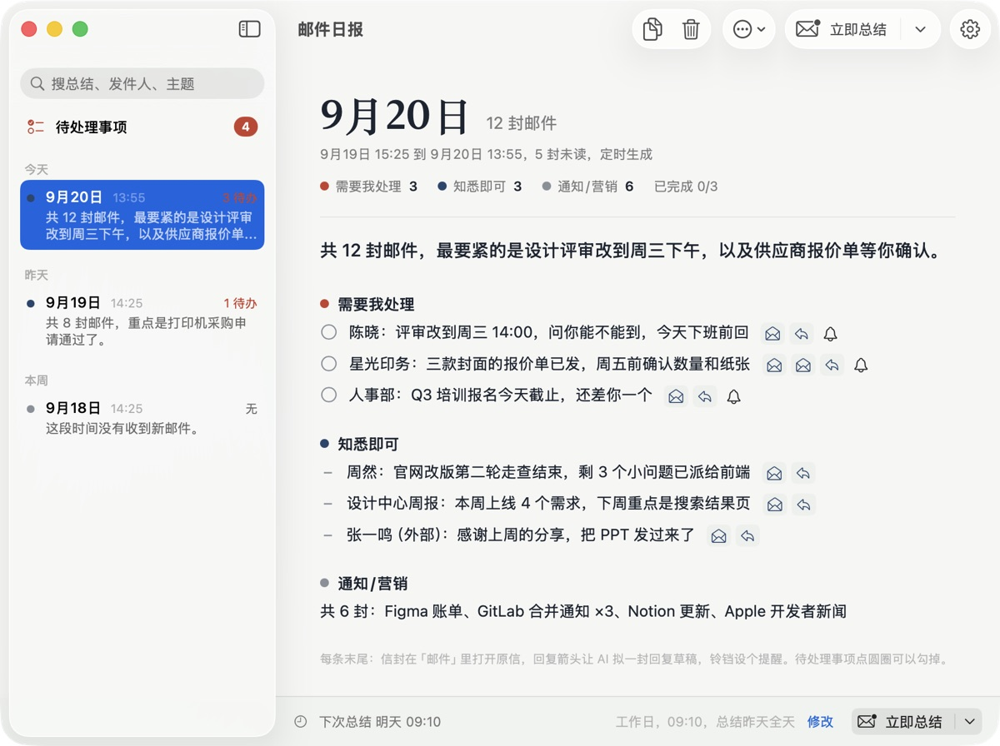
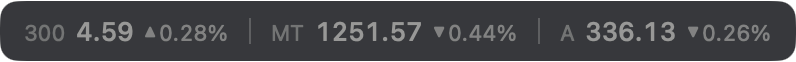
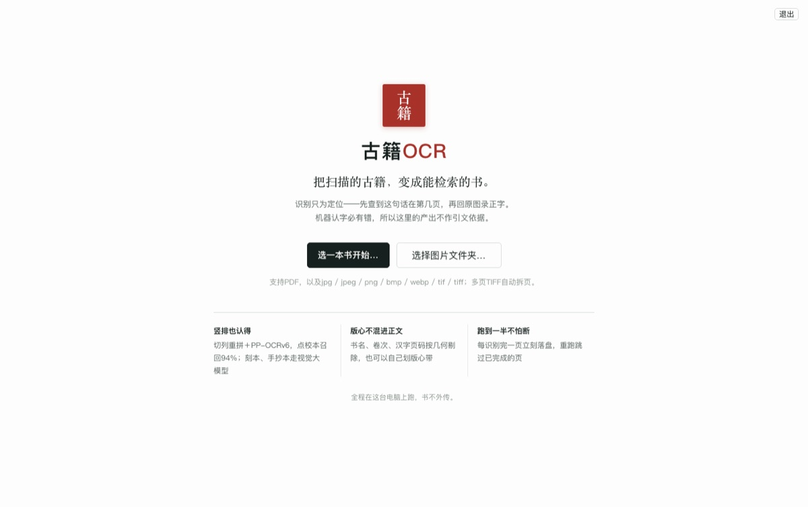

大盘云图打开
A 股全市场热力图，按申万行业和市值铺开，红涨绿跌。行情实时，滚轮或双指放大看小票。
自己做来自己用的几个小东西。网页的点开就能用，Mac 应用下载装上就行。
两个看行情的页面，手机和电脑都行，数据每个交易日自动更新。

A 股全市场热力图，按申万行业和市值铺开，红涨绿跌。行情实时，滚轮或双指放大看小票。
ETF 轮动、全天候、海龟策略的一页式回测台，参数随手改，净值当场画。分红按再投资还原过。
三个 macOS 应用。下载后拖进「应用程序」，第一次打开若提示无法验证开发者，右键选「打开」即可。


